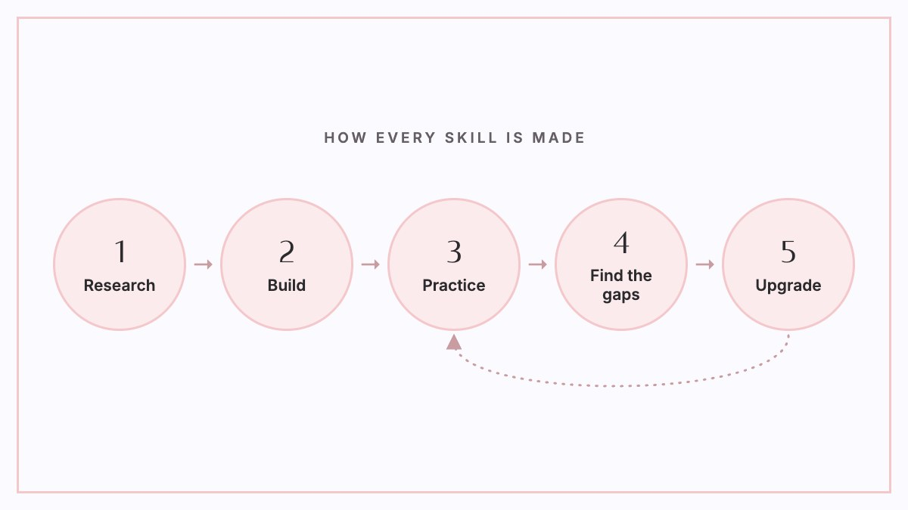

You found a Claude skill.
You plugged it in.
And your agent…
still answered like it had never met you.
If that’s happened to you, you didn’t do anything wrong.
It usually comes down to what went into the skill.
I talk about skills a lot.
And I’ve noticed something.
People don’t know what goes into one…
until you explain it to them.
So that’s what I want to do here.
What a Claude skill is.
Why some of them fall flat.
And what goes into every skill I build.
What is a Claude skill?
A skill is a folder of instructions.
Your agent opens it…
and learns how to do one job your way.
It’s not a new app.
It’s not a new tool you have to learn.
It’s the know-how you’d give a new team member on their first day…
written down so your agent can use it every single time.
Let’s make it real.
Say you’re a candle maker.
A customer messages you about a custom scent for her wedding.
Without a skill, your agent gives her a nice, general answer.
Polite.
Helpful.
Forgettable.
With a skill…
it answers the way you would.
It knows your order timeline.
It knows which questions to ask first.
It sounds like you.
Same agent. Different results.
That’s why I call it plug-and-play.
You add the skill…
and your agent knows the job.
Why more doesn’t mean better…
Here’s the part most people miss.
Some people think more is better.
More pages.
More rules.
More of everything.
And I understand that.
It feels like a bigger skill should do a bigger job.
But your agent reads every line you give it.
When half of those lines don’t matter…
the ones that do matter get buried.
More does not mean better.
I build my skills efficiently.
Every line has a job.
If a line doesn’t help the agent do the work…
it comes out.
A short skill isn’t a lazy skill.
A short skill is a skill someone took the time to finish.
What goes into my Claude skills
Not every skill is built the same way.
So let me show you how I build mine.
I build my skills with really hard work.

It starts with deep research.
Before I write a single line…
I research the job the skill is going to do.
How it’s done well.
Where it usually goes wrong.
What someone would need to know to do it right.
Then I think it through carefully.
Then I build it.
It takes me about 90 minutes to 2 hours…
or more sometimes…
to create a skill initially.
And that’s only the first version.
Then I practice with it.
I practice using the skill with my agent.
I give it real tasks.
I watch where it gets stuck.
That’s where the real learning happens.
Then my agents help me find the gaps.
My agents continue to protect the skill…
as they learn where the gaps fall.
When something’s missing, they catch it.
When something’s unclear, it shows up in the work.
Then I upgrade it.
So I’m constantly upgrading my skills.
And every time I do…
the version number changes.
A skill is never really finished.
That’s how I know it’s still getting better.
How you get the newest version
Which brings up a fair question.
If my skills keep changing…
how do you get the newest version?
Here’s how it works.
I’m giving every skill I sell its own update list.
When you get one of my skills…
you can join that skill’s update list.
(My AI assistant guide has its list now. The others are on the way.)
And I’ll email you when a new version is out.
That’s it.
No guessing.
No checking back to see if anything changed.
No wondering if you’re using an old copy.
The list is only for that one skill…
so the only emails you’ll get from it are about the skill you have.
You’ll hear from me when there’s something new.
What to look for in any Claude skill
Whether you build your own…
or get one from someone else…
here’s what I’d look for.
Does it do one job?
A skill that tries to do everything…
usually does nothing very well.
Was it practiced with a real agent?
Instructions can look perfect on paper.
The gaps only show up in the work.
Does it get better over time?
Look for a version number.
It tells you someone is still paying attention.
Will you hear about new versions?
A skill that changes is only helpful…
if you know it changed.
Those four questions will tell you a lot.
It’s not just a skill…
So why should you use my skills…
versus someone else’s?
It’s because of what goes into my skill building.
The research.
The hours.
The practice.
The upgrades.
It’s not just a skill.
It’s also a set of very important instructions.
Instructions I’ve practiced with my own agents…
before they ever reach yours.
It’s a plug-and-play boost for your agent.
I build my skills for Claude.
It’s the tool I use every day.
But you’ll never hear me say you have to be married to one tool.
Use what works for you.